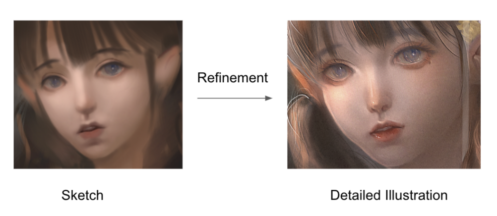
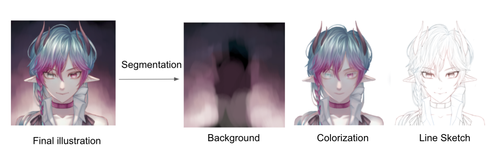

Task Description & Approach
We present 2 specific tasks that can be conqured by our layered temporal dataset. One is self-supervised generation refinmenet and the other is self-supervised segmentation. Along with the task description, we also describe the implementation details of our model for tackling the generation refinement task.
Self-supervised Generation Refinement

|
For this task, the input is a sketch, and the output is a refined illustration.
Our dataset enables generalized refining illustration using different layers and during the creation process.
APPROACH???!?!?!!?!
|
Self-supervised Segmentation

|
For this task, the input is an illustration, and the output is a batch of segmented layers.
Our dataset enables fine-grained segmentation of layers on any illustration (unknown layer information).
|
Results on Generation Refinement Task
We show results on using conditional generation model MUNIT.[4]
References
[1]Gwern: Making anime faces with stylegan (Feb 2019), https://www.gwern.net/
Faces
[2]Gwern: Danbooru2020: A large-scale crowdsourced and tagged anime illustration
dataset (Jan 2021), https://www.gwern.net/Danbooru2020
[3]LvMin Zhang, Chengze Li, T.T.W.Y.J., Liu, C.: Two-stage sketch
colorization. ACM Transactions on Graphics 37(6) (Nov 2018).
https://doi.org/https://doi.org/10.1145/3272127.3275090
[4]Vaswani, A., Shazeer, N., Parmar, N., Uszkoreit, J., Jones, L., Gomez, A.N., Kaiser,
L., Polosukhin, I.: Attention is all you need. CoRR abs/1706.03762 (2017), http:
//arxiv.org/abs/1706.03762
[5]Wang, T.C., Liu, M.Y., Zhu, J.Y., Tao, A., Kautz, J., Catanzaro, B.: High-resolution
image synthesis and semantic manipulation with conditional gans. In: Proceedings
of the IEEE Conference on Computer Vision and Pattern Recognition (2018)
{kind=link}
{kind=link}
{kind=link}
{kind=link}
{kind=link}
{kind=link}
{kind=link}
{kind=link}
{kind=link}
{kind=link}
{kind=link}
{kind=link}
{kind=link}
{kind=link}
{kind=link}
{kind=link}